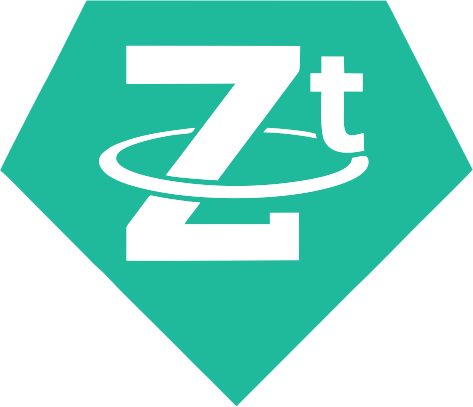

O tokenu USDt.z
USDt.z je stablecoin nové generace, který kombinuje stabilitu tradičních měn s nejmodernější blockchain technologií.
Proč jsme USDt.z vytvořili
Naším cílem bylo vytvořit bezpečný, transparentní a spolehlivý token, který usnadní využití kryptoměn v bankovním i nebankovním sektoru a nabídne stabilitu srovnatelnou s tradičními měnami.
Klíčové vlastnosti USDt.z
- 1:1 pevné krytí USD
- Podpora jako kolaterál pro půjčky i pro mladé a začínající klienty bez klasického zajištění
- Vysoká bezpečnost díky blockchain technologii nové generace
- Transparentní a auditovatelný systém
- Rychlé a levné transakce
Možnosti využití
USDt.z lze využít v široké škále finančních aplikací, od půjček, přes obchodování až po zajištění likvidity a stabilizaci aktiv.
Podpora mladých klientů
Token je ideální pro mladé klienty a startupy, které často nemají klasické zajištění pro půjčky. USDt.z umožňuje využít kryptoměnový kolaterál jako záruku, což otevírá nové možnosti financování.
Dokumentace a audit
Kompletní whitepaper a auditní zprávy jsou k dispozici ke stažení na hlavní stránce.

Prozkoumejte token USDt.z na BscScan a GeckoTerminal